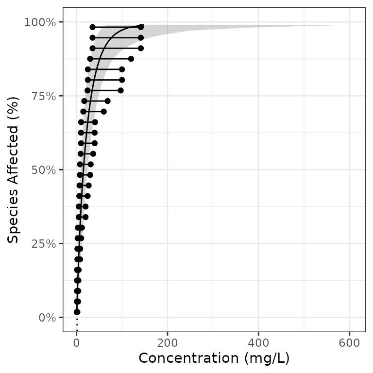

Introduction
ssdtools is an R package to fit Species Sensitivity Distributions (SSDs) using Maximum Likelihood and model averaging.
SSDs are cumulative probability distributions that are used to estimate the percent of species that are affected by a given concentration of a chemical. The concentration that affects 5% of the species is referred to as the 5% Hazard Concentration (HC). For more information on SSDs the reader is referred to Posthuma, Suter II, and Traas (2001).
In order to use ssdtools you need to install R (see below) or use the Shiny app. The shiny app includes a user guide. This vignette is a user manual for the R package.
Philosophy
ssdtools provides the key functionality required to fit SSDs using Maximum Likelihood and model averaging in R. It is intended to be used in conjunction with tidyverse packages such as readr to input data, tidyr and dplyr to group and manipulate data and ggplot2 (Wickham 2016) to plot data. As such it endeavours to fulfill the tidyverse manifesto.
Installing
In order to install R (R Core Team 2018) the appropriate binary for the users operating system should be downloaded from CRAN and then installed.
Once R is installed, the ssdtools package can be installed (together with the tidyverse) by executing the following code at the R console
install.packages("ssdtools")
install.packages("tidyverse")The ssdtools package (and key packages) can then be loaded into the current session using
Getting Help
To get additional information on a particular function just type ? followed by the name of the function at the R console. For example ?ssd_gof brings up the R documentation for the ssdtools goodness of fit function.
For more information on using R the reader is referred to R for Data Science (Wickham and Grolemund 2016).
If you discover a bug in ssdtools please file an issue with a reprex (repeatable example) at https://github.com/bcgov/ssdtools/issues.
Inputting Data
Once the ssdtools package has been loaded the next task is to input some data. An easy way to do this is to save the concentration data for a single chemical as a column called Conc in a comma separated file (.csv). Each row should be the sensitivity concentration for a separate species. If species and/or group information is available then this can be saved as Species and Group columns. The .csv file can then be read into R using the following
data <- read_csv(file = "path/to/file.csv")For the purposes of this manual we use the CCME dataset for boron which is provided with the ssdtools package.
boron_data <- ssdtools::boron_data
print(boron_data)
#> # A tibble: 28 × 5
#> Chemical Species Conc Group Units
#> <chr> <chr> <dbl> <fct> <chr>
#> 1 Boron Oncorhynchus mykiss 2.1 Fish mg/L
#> 2 Boron Ictalurus punctatus 2.4 Fish mg/L
#> 3 Boron Micropterus salmoides 4.1 Fish mg/L
#> 4 Boron Brachydanio rerio 10 Fish mg/L
#> 5 Boron Carassius auratus 15.6 Fish mg/L
#> 6 Boron Pimephales promelas 18.3 Fish mg/L
#> 7 Boron Daphnia magna 6 Invertebrate mg/L
#> 8 Boron Opercularia bimarginata 10 Invertebrate mg/L
#> 9 Boron Ceriodaphnia dubia 13.4 Invertebrate mg/L
#> 10 Boron Entosiphon sulcatum 15 Invertebrate mg/L
#> # … with 18 more rowsFitting Distributions
The function ssd_fit_dists() inputs a data frame and fits one or more distributions. The user can specify a subset of the
-
gamma (
gamma), -
Gompertz (
gompertz), -
log-Gumbel (
lgumbel), -
log-logistic (
llog), -
log-normal (
lnorm) and -
Weibull (
weibull)
distributions using the dists argument.
boron_dists <- ssd_fit_dists(boron_data, dists = c("llogis", "lnorm", "gamma"))The user can also specify one or more custom distributions.
Coefficients
The coefficients can be extracted using the coef function. However, in and off themselves the coefficients are not that helpful.
coef(boron_dists)
#> $llogis
#> locationlog scalelog
#> 2.6261249 0.7403092
#>
#> $lnorm
#> meanlog sdlog
#> 2.561644 1.241725
#>
#> $gamma
#> scale shape
#> 25.1263769 0.9500513Plots
It is generally much more informative to plot the fits using the autoplot generic function. As autoplot returns a ggplot object it can be modified prior to plotting (printing) to make it look prettier.
theme_set(theme_bw()) # set plot theme
gp <- autoplot(boron_dists)
gp <- gp + ggtitle("Species Sensitivity Distributions for Boron")
print(gp)
Selecting One Distribution
Given multiple distributions the user is faced with choosing the best fitting distribution (or as discussed below averaging the results weighted by the fit).
boron_gof <- ssd_gof(boron_dists)
boron_gof[order(boron_gof$delta), ]
#> # A tibble: 3 × 9
#> dist ad ks cvm aic aicc bic delta weight
#> <chr> <dbl> <dbl> <dbl> <dbl> <dbl> <dbl> <dbl> <dbl>
#> 1 gamma 0.440 0.117 0.0554 238. 238. 240. 0 0.595
#> 2 lnorm 0.507 0.106 0.0703 239. 240. 242. 1.40 0.296
#> 3 llogis 0.487 0.0993 0.0595 241. 241. 244. 3.38 0.11The ssd_gof() function returns several goodness of fit measures that can be used to select the best distribution including three statistics
-
Anderson-Darling (
ad) statistic, -
Kolmogorov-Smirnov (
ks) statistic and -
Cramer-von Mises (
cvm) statistic
and three information criteria
- Akaike’s Information Criterion (
aic), - Akaike’s Information Criterion corrected for sample size (
aicc) and - Bayesian Information Criterion (
bic)
Following Burnham and Anderson (2002) we recommend the aicc for model selection. The best fitting model is that with the lowest aicc (indicated by the model with a delta value of 0.000 in the goodness of fit table). In the current example the best fitting model is the gamma distribution but the lnorm distribution has some support.
For further information on the advantages of an information theoretic approach in the context of selecting SSDs the reader is referred to Schwarz and Tillmanns (2019)
Averaging Multiple Distributions
Often other distributions will fit the data almost as well as the best distribution as evidenced by delta values < 2 (Burnham and Anderson 2002). In this situation the recommended approach is to estimate the average fit based on the relative weights of the distributions (Burnham and Anderson 2002). The aicc based weights are indicated by the weight column in the goodness of fit table. In the current example, the gamma and log-normal distributions have delta values < 2.
Estimating the Fit
The predict function can be used to generate estimates model-averaged (or if average = FALSE individual) estimates. By default model averaging is based on aicc.
The resultant object is a data frame of the estimated concentration (est) with standard error (se) and lower (lcl) and upper (ucl) 95% confidence limits by percent of species affected (percent). The confidence limits are estimated using parametric bootstrapping.
boron_pred
#> # A tibble: 99 × 6
#> percent est se lcl ucl dist
#> <int> <dbl> <dbl> <dbl> <dbl> <chr>
#> 1 1 0.379 0.361 0.125 1.46 average
#> 2 2 0.624 0.507 0.217 2.11 average
#> 3 3 0.856 0.621 0.317 2.65 average
#> 4 4 1.08 0.720 0.422 3.15 average
#> 5 5 1.31 0.808 0.527 3.57 average
#> 6 6 1.53 0.889 0.636 4.00 average
#> 7 7 1.75 0.964 0.748 4.42 average
#> 8 8 1.98 1.03 0.862 4.83 average
#> 9 9 2.21 1.10 0.990 5.23 average
#> 10 10 2.44 1.17 1.12 5.63 average
#> # … with 89 more rowsThe data frame of the estimates can then be plotted together with the original data using the ssd_plot() function to summarize an analysis. Once again the returned object is a ggplot object which can be customized prior to plotting.
gp <- ssd_plot(boron_data, boron_pred,
color = "Group", label = "Species",
xlab = "Concentration (mg/L)", ribbon = TRUE
)
gp <- gp + expand_limits(x = 5000) + # to ensure the species labels fit
scale_color_manual(values = c(
"Amphibian" = "Black", "Fish" = "Blue",
"Invertebrate" = "Red", "Plant" = "Brown"
)) +
ggtitle("Species Sensitivity for Boron")
print(gp)
In the above plot the model-averaged 95% confidence interval is indicated by the shaded band and the model-averaged 5% Hazard Concentration (\(HC_5\)) by the dotted line. Hazard concentrations are discussed below.
Hazard Concentrations
The 5% hazard concentration (\(HC_5\)) is the concentration that affects 5% of the species tested.
print(boron_hc5)
#> # A tibble: 1 × 6
#> percent est se lcl ucl dist
#> <dbl> <dbl> <dbl> <dbl> <dbl> <chr>
#> 1 5 1.31 0.808 0.527 3.57 averagePlotting
The ssdtools package provides three ggplot geoms to allow you construct your own plots.
The first is geom_ssd() which plots species sensitivity data
ggplot(boron_data) +
geom_ssd(aes_string(x = "Conc"))
The second is geom_xribbon() which plots species sensitivity confidence intervals
ggplot(boron_pred) +
geom_xribbon(aes_string(xmin = "lcl", xmax = "ucl", y = "percent/100"))
And the third is geom_hcintersect() which plots hazard concentrations
ggplot() +
geom_hcintersect(xintercept = c(1, 2, 3), yintercept = c(5, 10, 20) / 100)
They can be combined together as follows
gp <- ggplot(boron_pred, aes_string(x = "est")) +
geom_xribbon(aes_string(xmin = "lcl", xmax = "ucl", y = "percent/100"), alpha = 0.2) +
geom_line(aes_string(y = "percent/100")) +
geom_ssd(data = boron_data, aes_string(x = "Conc")) +
scale_y_continuous("Species Affected (%)", labels = scales::percent) +
expand_limits(y = c(0, 1)) +
xlab("Concentration (mg/L)")
print(gp + geom_hcintersect(xintercept = boron_hc5$est, yintercept = 5 / 100))
To log the x-axis add the following code.
gp <- gp + coord_trans(x = "log10") +
scale_x_continuous(
breaks = scales::trans_breaks("log10", function(x) 10^x),
labels = comma_signif
)
print(gp + geom_hcintersect(xintercept = boron_hc5$est, yintercept = 5 / 100))
The most recent plot can be saved as a file using ggsave(), which also allows the user to set the resolution.
ggsave("file_name.png", dpi = 600)Censored Data
Censored data is that for which only a lower and/or upper limit is known for a particular species. If the right argument in ssd_fit_dists() is different to the left argument then the data are considered to be censored. fluazinam is a censored data set from the fitdistrplus package.
data(fluazinam, package = "fitdistrplus")
head(fluazinam)
#> left right
#> 1 3.8 3.8
#> 2 33.6 33.6
#> 3 87.0 87.0
#> 4 1700.0 NA
#> 5 640.0 640.0
#> 6 1155.0 NAThere are less goodness-of-fit statistics available for fits to censored data (currently just aic and bic). The delta values are calculated using aic.
As the sample size n is undefined for censored data, aicc cannot be calculated. However, if all the models have the same number of parameters, the aic delta values are identical to those for aicc. For this reason, ssdtools only permits the analysis of censored data using two-parameter models.
fluazinam_dists <- ssd_fit_dists(fluazinam, left = "left", right = "right")
ssd_gof(fluazinam_dists)The model-averaged predictions (and hazard concentrations complete with 95% confidence limits) can be calculated using aic
and the results plotted complete with arrows indicating the censorship.
ssd_plot(fluazinam, fluazinam_pred,
left = "left", right = "right",
xlab = "Concentration (mg/L)"
)
#> Warning: Removed 98 row(s) containing missing values (geom_path).
#> geom_path: Each group consists of only one observation. Do you need to adjust
#> the group aesthetic?

ssdtools by the Province of British Columbia is licensed under a Creative Commons Attribution 4.0 International License.
References
Burnham, Kenneth P., and David R. Anderson, eds. 2002. Model Selection and Multimodel Inference. New York, NY: Springer New York. https://doi.org/10.1007/b97636.
Posthuma, Leo, Glenn W Suter II, and Theo P Traas. 2001. Species Sensitivity Distributions in Ecotoxicology. CRC press. https://www.routledge.com/Species-Sensitivity-Distributions-in-Ecotoxicology/Posthuma-II-Traas/p/book/9781566705783.
R Core Team. 2018. R: A Language and Environment for Statistical Computing. Vienna, Austria: R Foundation for Statistical Computing. https://www.R-project.org/.
Schwarz, Carl, and Angeline Tillmanns. 2019. “Improving Statistical Methods for Modeling Species Sensitivity Distributions.” WSS2019-07. Victoria, BC: Province of British Columbia.
Wickham, Hadley. 2016. ggplot2: Elegant Graphics for Data Analysis. Springer-Verlag New York. https://ggplot2.tidyverse.org.
Wickham, Hadley, and Garrett Grolemund. 2016. R for Data Science: Import, Tidy, Transform, Visualize, and Model Data. First edition. Sebastopol, CA: O’Reilly. https://r4ds.had.co.nz.